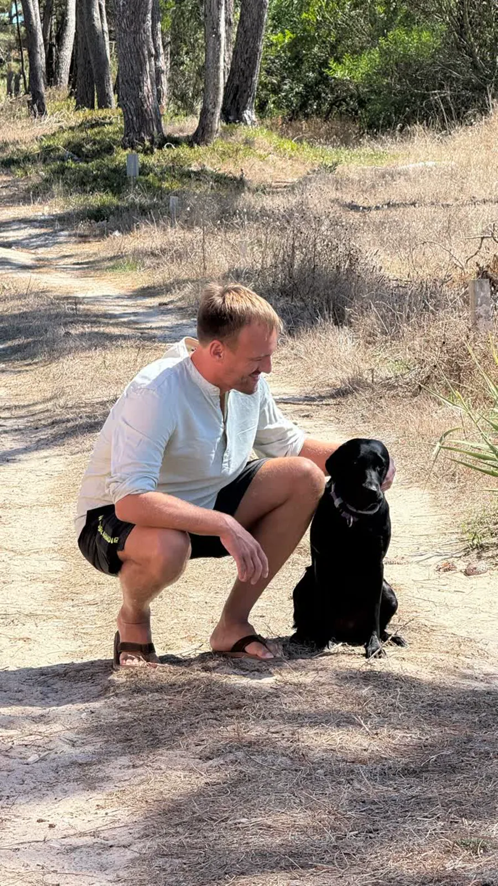

Du liegst um drei wach und gehst im Kopf die Zahlen von morgen durch.
Wenn du wochenlang so schläfst, merkst du es tagsüber im Job und zu Hause.
Du bekommst kostenlos eine Anleitung für genau diese Nacht, sie dauert rund 15 Minuten.

Ich war Head of Sales und lag um drei wach, weil ich die Zahlen von morgen durchgerechnet habe. Ich habe zehn Jahre gebraucht, bis ich wieder durchgeschlafen habe.
Du bekommst den Nacht-Reset sofort und danach drei Tage lang jeden Tag eine kurze Übung.
- 1Du bekommst den Nacht-Reset sofort.
- 2Danach bekommst du drei Tage lang jeden Tag eine kurze Übung.
Das Audio nehme ich gerade auf, bis dahin bekommst du den Text.
Hol dir den Nacht-Reset.
Kostenlos. Mit STOP hörst du jederzeit auf.
Du liegst um drei wach und gehst im Kopf die Zahlen von morgen durch. Hier ist der Text.
Das Audio folgt. Hier ist die Textfassung, rund 15 Minuten.
Stell den Bildschirm ganz dunkel, lies einmal, und dann leg das Handy weg.
Sicherheitshinweis. Wenn dir schwindelig wird, hörst du auf und atmest normal weiter. Bei Herz- oder Kreislaufproblemen, in der Schwangerschaft oder bei Epilepsie lässt du das Luftanhalten weg und atmest nur lang aus.
Textfassung
Es ist mitten in der Nacht, und dein Kopf arbeitet noch. Er geht das Gespräch von heute durch, die Zahlen von morgen, die Mail, die noch offen ist. Die nächsten Minuten geben ihm etwas Einfaches zu tun. Du musst dabei nichts richtig machen. Wenn du mittendrin einschläfst, hat es funktioniert.
Ich kenne diese Uhrzeit. Ich habe Verantwortung für die Zahlen übernommen, aber lange nicht für mich. Das Team hat geliefert, ich lag trotzdem um drei wach. Ich habe zehn Jahre gebraucht, um herauszufinden, wie ich nachts durchschlafe.
Leg das Handy weg.
Lies das hier einmal bis zum Ende, mit dem Bildschirm so dunkel wie möglich. Dann leg das Handy mit dem Bildschirm nach unten weg und mach die vier Schritte im Dunkeln.
1. Schreib auf, was morgen ansteht.
Der erste Schritt nimmt deinem Kopf die Arbeit ab, die ihn wach hält: sich alles für morgen merken zu müssen. Wenn ein Zettel und ein Stift in Reichweite sind, mach kurz ein kleines Licht an und schreib so genau wie möglich auf, was morgen ansteht. Nicht „Projekt“, sondern „Um neun den Kunden wegen des Angebots anrufen“. Ein Punkt pro Zeile. Schreib, bis nichts Wichtiges mehr da ist: wer, was, wann.
Wenn kein Zettel da ist, ist das auch in Ordnung. Dann geh die zwei, drei wichtigsten Punkte einmal in Gedanken durch und sag dir zu jedem: „Steht morgen früh als Erstes auf dem Zettel.“
Warum das hilft: In einer Studie im Schlaflabor haben junge Erwachsene vor dem Schlafen fünf Minuten lang geschrieben. Die eine Gruppe hat aufgeschrieben, was in den nächsten Tagen zu erledigen ist, die andere, was sie schon erledigt hatte. Die Gruppe mit der Liste für morgen ist schneller eingeschlafen, und je genauer die Liste war, desto schneller. Das war eine Laborstudie mit jungen Erwachsenen, und der Schritt kostet dich nur ein paar Minuten. Was auf dem Papier steht, muss dein Kopf heute Nacht nicht mehr festhalten.
Jetzt Licht aus, Stift weg, und leg dich so hin, wie du am liebsten schläfst.
2. Atme vier Sekunden ein, halte sieben, atme acht aus.
Als Nächstes zählst du in Gedanken mit. Du atmest vier Sekunden durch die Nase ein, hältst die Luft sieben Sekunden und atmest acht Sekunden lang durch den Mund aus. Vier Runden, nicht mehr. Wenn dir dabei schwindelig wird, hörst du auf und atmest normal weiter. Bei Herz- oder Kreislaufproblemen, in der Schwangerschaft oder bei Epilepsie lässt du das Luftanhalten weg und atmest nur lang aus.
Erst einmal ganz ausatmen.
Runde eins. Ein, durch die Nase: eins, zwei, drei, vier. Halten: eins, zwei, drei, vier, fünf, sechs, sieben. Und aus, durch den Mund: eins, zwei, drei, vier, fünf, sechs, sieben, acht.
Runde zwei, drei und vier genauso: vier ein, sieben halten, acht aus.
Danach atmest du wieder, wie es von allein kommt. Nur das Ausatmen darf ein bisschen länger sein als das Einatmen. Langsam ein, und lang aus. Langsam ein, und lang aus.
3. Spann jede Stelle kurz an und lass sie wieder locker.
Du liegst, aber Füße, Hände, Schultern und Kiefer sind oft noch angespannt. Du spannst jede Stelle kurz an, ungefähr fünf Sekunden, und lässt sie dann schlagartig locker. Beim Anspannen atmest du normal weiter. Es soll fest sein, aber nicht wehtun.
Bei den Füßen ziehst du die Zehen zu dir heran und spannst die Füße an. Dann lässt du sie locker.
Bei den Waden drückst du die Fersen leicht nach unten und spannst die Waden an. Dann lässt du sie locker.
Bei den Oberschenkeln drückst du die Knie durch und spannst die Oberschenkel an. Dann lässt du sie locker. Die Beine liegen auf der Matratze.
Beim Gesäß spannst du fest an und lässt dann locker.
Beim Bauch machst du ihn fest, als ob gleich jemand drauf drückt, und lässt dann locker. Der Bauch hebt und senkt sich von allein.
Bei den Händen machst du zwei Fäuste, so fest du kannst, und lässt dann locker. Die Finger fallen auseinander.
Bei den Armen spannst du Ober- und Unterarme an, die Ellbogen leicht gebeugt, und lässt dann locker.
Bei den Schultern ziehst du sie hoch zu den Ohren und lässt sie dann locker. Da ist abends oft noch Spannung drin.
Beim Kiefer beißt du die Zähne zusammen und lässt dann locker. Die Zähne gehen ein kleines Stück auseinander.
Bei der Stirn ziehst du die Augenbrauen zusammen und lässt sie dann locker. Die Augen dürfen jetzt schwer werden.
Jetzt hast du einmal von den Füßen bis zur Stirn durch. Du musst nichts festhalten. Das Bett trägt dich.
Diese Methode heißt Progressive Muskelentspannung. Sie geht auf den Arzt Edmund Jacobson zurück. Nach dem festen Anspannen merkst du deutlicher, wie sich locker anfühlt.
4. Gib dem Kopf Bilder, die nichts miteinander zu tun haben.
Der letzte Teil ist für den Kopf, der trotzdem noch weiterdenken will. Grübeln heißt: Der Kopf sucht einen Zusammenhang. Du gibst ihm das Gegenteil, Bilder, die nichts miteinander zu tun haben. Du nimmst ein Wort, und zu jedem Buchstaben stellst du dir ein Bild vor. Ganz kurz, ganz einfach, dann das nächste. Es muss nichts zusammenpassen.
Die Idee kommt vom Kognitionsforscher Luc Beaudoin. Er nennt es Cognitive Shuffle, das Durchmischen der Gedanken. Kurz vor dem Einschlafen springen die Gedanken ohnehin von Bild zu Bild. Wer das nachahmt, gibt dem Kopf nichts mehr zu lösen. Untersucht ist das bisher nur in wenigen Studien. Probier es aus.
Zum Beispiel das Wort „Boot“.
B. Ein roter Ball rollt langsam über eine Wiese. Ein frisches Brot mit dunkler Kruste liegt da. Eine Bank steht im Park unter einem Baum. Ein Berg ist weit weg, mit Schnee oben drauf. Eine gelbe Birne liegt auf einem Holztisch.
O. Ein alter Ofen aus Gusseisen steht da. Eine Orange ist halb geschält. Ein grüner Ohrensessel steht im Raum. Eine Olive liegt in einer kleinen Schale.
Noch ein O. Du bist früh am Morgen an einem Ort am Meer. Ein Oktopus treibt langsam durchs Wasser. Ein Ordner steht zu im Regal.
T. Ein Tisch aus hellem Holz steht da. Aus einer Tasse dampft es. Ein Teppich hat ein altes Muster. Ein Turm aus Steinen steht am Strand. Eine rote Tomate hängt an der Pflanze.
Danach suchst du dir selbst ein Wort, irgendein Wort, und zu jedem Buchstaben ein Bild nach dem anderen, langsam. Wenn dir nichts einfällt, nimm Fenster, Schuh, Apfel, Wolke, Stein oder Schlüssel.
Du musst nichts mehr tun. Was morgen ansteht, steht auf dem Zettel. Du liegst im Bett. Der Kopf muss heute Nacht nichts mehr lösen.
Danke. Dein 3-Tage-Starter ist bereit.
Dein nächster Schritt: Tipp auf den Button und schick die vorbereitete Nachricht ab. Dann kommt Tag 1 direkt zu dir.
WeiterDein nächster Schritt: Schau in dein Postfach und bestätige deine Adresse. Danach kommt Tag 1. Wenn nichts da ist, schau im Spam-Ordner nach.
Morgen kommt Tag 2, übermorgen Tag 3.
Die Fragen, die oft kommen.
Kostet das etwas?
Nein, beides ist kostenlos.
Wie höre ich auf?
Schreib STOP, oder nimm den Link in der E-Mail.
Ist das eine Behandlung?
Nein. Wenn du über längere Zeit nachts wach liegst, sprich mit deinem Hausarzt.
Wenn die Nacht ruhiger wird, kommt oft noch ein Satz.
Ein alter Satz, der dich wieder in den Betriebsmodus holt. Der nächste Schritt im Kreis zeigt drei davon. Mehr nicht.
Quellen
- Scullin MK, Krueger ML, Ballard HK, Pruett N, Bliwise DL (2018): The effects of bedtime writing on difficulty falling asleep: A polysomnographic study comparing to-do lists and completed activity lists. Journal of Experimental Psychology: General 147(1):139–146. doi.org/10.1037/xge0000374
Laborstudie, 57 junge Erwachsene. Eine Nacht im Schlaflabor. - Beaudoin LP, Digdon N, O'Neill K, Rachor G (2016): Serial diverse imagining task: A new remedy for bedtime complaints of worrying and other sleep-disruptive mental activity. Abstract, SLEEP 2016. summit.sfu.ca/item/16196
Konferenzbeitrag, kein begutachteter Artikel. Keine Messung der Einschlafzeit. - Zaccaro A u. a. (2018): How Breath-Control Can Change Your Life: A Systematic Review on Psycho-Physiological Correlates of Slow Breathing. Frontiers in Human Neuroscience 12:353. doi.org/10.3389/fnhum.2018.00353
Übersicht kleiner Studien. Sie betrifft langsames Atmen, nicht diese vier Runden im Einzelnen.